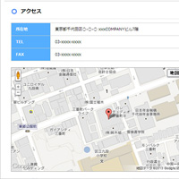

使用外掛簡單的將目前位置載入到GoogleMaps
上次接紹了在複數的格式設計中依據固定分類、固定葉面或TOP頁面等場所以is_home切換顯示的圖片。
本次要介紹存取企業網頁會經常看到的載入Google Maps的外掛:「Google Maps v3 Shortcode」。
上次接紹了在複數的格式設計中依據固定分類、固定葉面或TOP頁面等場所以is_home切換顯示的圖片。
本次要介紹存取企業網頁會經常看到的載入Google Maps的外掛:「Google Maps v3 Shortcode」。
WordPress3.x後新增了客製化選單的項目，可用以製作商務網站所需要的瀏覽列等選單功能。